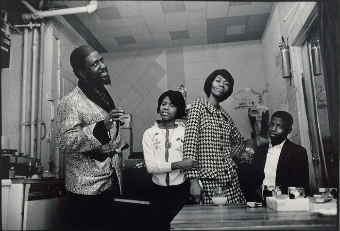

The demons and obsessions of jazz genius Thelonious Monk
Consider this: both Dizzy Gillespie and Thelonious Monk were born in 1917. The creative DNA and brilliance of each musician were integral to the birth of modern jazz. For countless hours, weeks and months during the early 1940s they played, studied, argued and innovated together, along with Charlie Parker, drummer Kenny Clarke, bassist Oscar Pettiford, guitarist Charlie Christian and a steady progression of black men dedicated to exploring the possibilities of the music of their time, and to changing its shape. (And yes, aside from the pianist Mary Lou Williams and a number of female vocalists, this chapter in musical development is about the men.) Then, by virtue of his crowd-pleasing pyrotechnic style, “dizzy as a fox” personality and willingness to school the squares, combined with the organisational gifts necessary to keep his bands together, trumpeter Gillespie’s career soared to the stars while pianist Monk, the jobbing musician who couldn’t, more than wouldn’t, conform to the conventions of the job, spent most of his professional life struggling to support his family. Yet, although his dazzle is not dimmed, in their centennial year’s London jazz festival, Dizzy is treated to only one commemorative concert, while Monk and his music dominate two full days. We love Dizzy, but Monk’s multi-dimensional mystery tugs more insistently at our consciousness than Dizzy’s sophisticated, sun-drenched delight. The ineffable allure of shadows.
Monk’s multi-dimensional mystery tugs more insistently at our consciousness than Dizzy’s sophisticated, sun-drenched delight. The ineffable allure of shadows.
Some of that mystery was down to the superficial reactions of white critics and audiences disconcerted by a taciturn black man whose erect posture made him appear taller than his already considerable height, and who saw no reason to verbally explain what he felt his music declared. In his habit of getting up and dancing to the solos of his bandmates, they postulated shaman mysticism and voodoo ritual rather than simple exultation and grooving to the beats. Fans and recording companies alike wanted a continuing cascade of new music – also part of a successful musician’s “job”, while Monk, in the manner of Cézanne, with his ceaseless studies of Mont St Victoire, or a cellist constantly revisiting Bach’s suites, sought new ways of revisiting groupings of notes he’d already ordered, knowing their possibilities to be infinite. A more substantive element of mystery for audiences and musicians alike was: why was the man so stubborn? Why did he insist on playing angular, spacious and “slow” when he could play as fast as the legendary James P Johnson and the fashion was for fast? Even a collaborator such as Miles Davis asked why Monk persisted with the weird chord changes that just sounded wrong. But to Monk, his chords weren’t weird, they were the logical result of countless hours of musical exploration.
But to Monk, his chords weren’t weird, they were the logical result of countless hours of musical exploration.
He was a dedicated family man who worried about providing for his wife and children, but couldn’t give an inch. When you understand the inside the outside will be just fine, he’d say. Get inside the music and listen. Meanwhile, gigs and recording cash passed him. Loyal to his music and loyal to his friends he lost his all-important cabaret licence rather than rat out the younger, infinitely talented but drug-addled Bud Powell after being arrested for holding heroin that belonged to Powell. He lost the licence again when he refused to leave Pannonica de Koenigswarter’s Bentley on the order of the Delaware police, who had acted purely because he was black and not her chauffeur. Countering those who found Monk’s percussive, splay-fingered playing style untutored and crude, Juilliard-trained composer Hall Overton was among those who understood Monk’s genius, explaining that he “adjusted his finger pressure on the keys the way baseball pitchers do to the ball to make its path bend, curve or dip in flight”, and asking how much practice did it take to master that form of art? Tenor player Johnny Griffin said Monk’s music “was like leaves on a tree. His music grew from nowhere else but inside of him.” And then there was the silence. There is nothing more daunting and mysterious. We flood silence with chatter, we fill it with noise or notes rather than let it reveal what it knows or just let it be. For Monk, silence was at once muse and the centre of his gravity, as much as his wife, Nellie, his children, Boo Boo and Toot, his “crazy” friend Pannonica, the church piano or the myriad manifestations of blue.

For Monk, silence was at once muse and the centre of his gravity, as much as his wife, Nellie, his children, Boo Boo and Toot, his “crazy” friend Pannonica, the church piano or the myriad manifestations of blue.
It’s Monk’s encyclopaedic and joyous considerations of silence that secure his place in the pantheon of past, present and future improvisational music as much as his jewel-faceted tunes and mould breaking/remaking harmonics. Little surprise then that, when wearied beyond his considerable limits by his misdiagnosed and ignorantly medicated bipolar condition, ceaseless financial woes, his recording company’s unrelenting demands, the deaths of too many friends, Monk, in 1975, embraced the comforting mysteries of permanent silence. Taking refuge in Pannonica’s New Jersey home, he stopped playing the piano, emerging only for neighbourhood walkabouts until he suffered, on 5 February 1982, a stroke that would prove fatal, and died in the loving arms of his Nellie, 12 days later. We can be sure that he was still listening throughout his silence, for the music never stops. It has never stopped, for which we are profoundly blessed. Happy centenary, Brother Thelonious Sphere Monk.